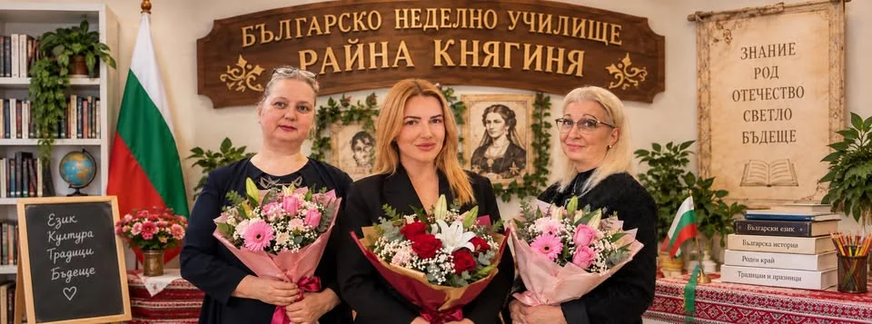
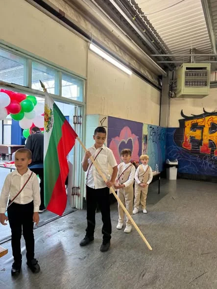
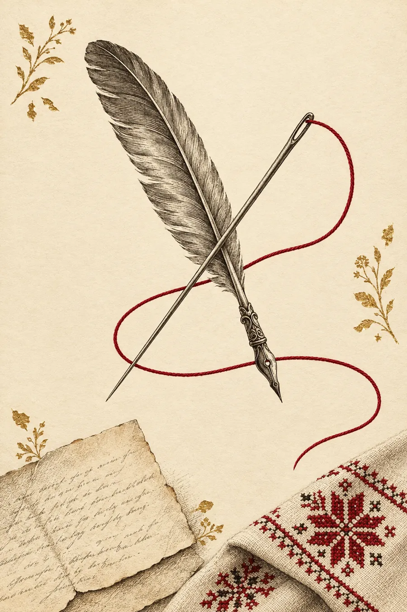
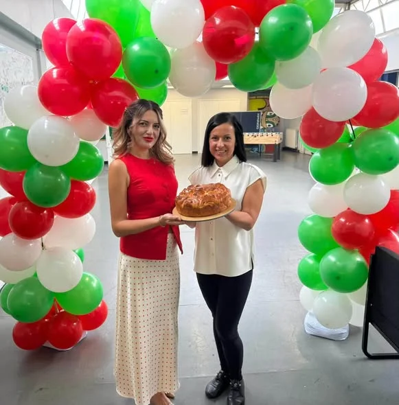
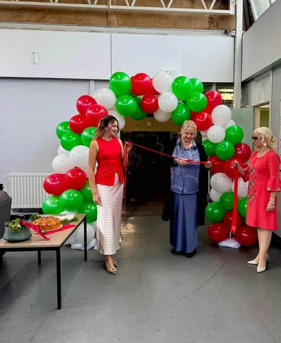

I
Езикът
Буквите и думите
От първата буква на азбуката до свободното четене, писане и говорене — българският става език на сърцето, не само на дома.
Българско неделно училище
Тук езикът звучи, традициите оживяват, а децата растат с обич към България.
Отворете нашата история

България е там, където сме ние.
Глава I
През 1876 г. младата учителка от Панагюрище Райна Попгеоргиева ушива със собствените си ръце знамето на Априлското въстание. Историята я помни като Райна Княгиня — учителката, която превръща иглата и конеца в символ на свободата.
Сто и петдесет години по-късно носим името ѝ в Йейт. Нашата игла е българското слово, а нашата нишка — обичта, която свързва децата, растящи във Великобритания, със земята на техните родители и баби.
Запознаваме децата с българския език, история, култура и наследство. Работим в тясно сътрудничество с Министерството на образованието и науката на България и следваме неговите програми за българските училища в чужбина.
За семействата от Йейт, Чипинг Содбъри, Торнбъри, Филтън, Брадли Стоук, Емерсънс Грийн, Фрамптън Котърел, Бат и околностите.

Глава II
Всяка неделя децата учат в две групи: предучилищна група (от 2 до 5 години) и училище – от 1. до 12. клас.
I
Буквите и думите
От първата буква на азбуката до свободното четене, писане и говорене — българският става език на сърцето, не само на дома.
II
Историята и родните места
Хората и събитията, изградили България, и красотата на нейните планини, реки и градове — разказани като истории, които децата запомнят.
III
Празници, песни и обичаи
Баба Марта, Великден, Коледа, Денят на будителите и 24 май — празнувани заедно, както у дома.
IV
Рисуване, работилници и сцена
Мартеници, шевици, рисунки, рецитали и представления — децата създават с ръцете си това, което учат с ума си.
„Да пазим корените, за да расте бъдещето!“
Глава III
Всяка голяма история има първа страница. Това е нашата — и тя тепърва започва.
20 септември 2026
С погача и сол, лента в националните цветове и много гости училището отвори врати в Йейт.
Септември 2026
Ана Руйкова, Елена Боева и Станислава Кюмурджиева поеха мисията на училището.
Септември 2026
Първите ученици, първият час, първите букви, изписани на български.
1 ноември · предстои
Денят на народните будители — подходящ първи празник за училище, носещо името на учителка.
Декември · предстои
Коледари, коледно представление и празник за цялото семейство.
Бъдещето
Библиотека и неделно читалище, училищно знаме, празнични униформи и български център за цялото семейство.


Глава IV
Като Райна Княгиня, нашите учителки вярват, че просвещението е най-красивата форма на обич към родината.
Учител
Училищен ръководител
Учител
Глава V
Петте часа в неделя са само началото. Изграждаме български център за цялото семейство.
Място за срещи, подкрепа и общи идеи за училището.
Български книги за деца и родители и неделно читалище.
Празници, които събират семействата от целия район.
Общностни дни на открито с българска храна и игри.
Мартеници, великденски яйца, шевици и занаяти за малки и големи.
Рецитали, песни и хора, в които всяко дете има своя роля.
Езикови занятия за родителите, докато децата учат.
ПредстоиПразнични униформи и собствено училищно знаме — в духа на нашия патрон.
ПредстоиГлава VI
Мигове от деня на откриването. Още във Facebook страницата ни.
Глава VII
Съобщения, събития и разкази от нашите недели заедно.
Глава VIII
Все още има свободни места за тази учебна година.